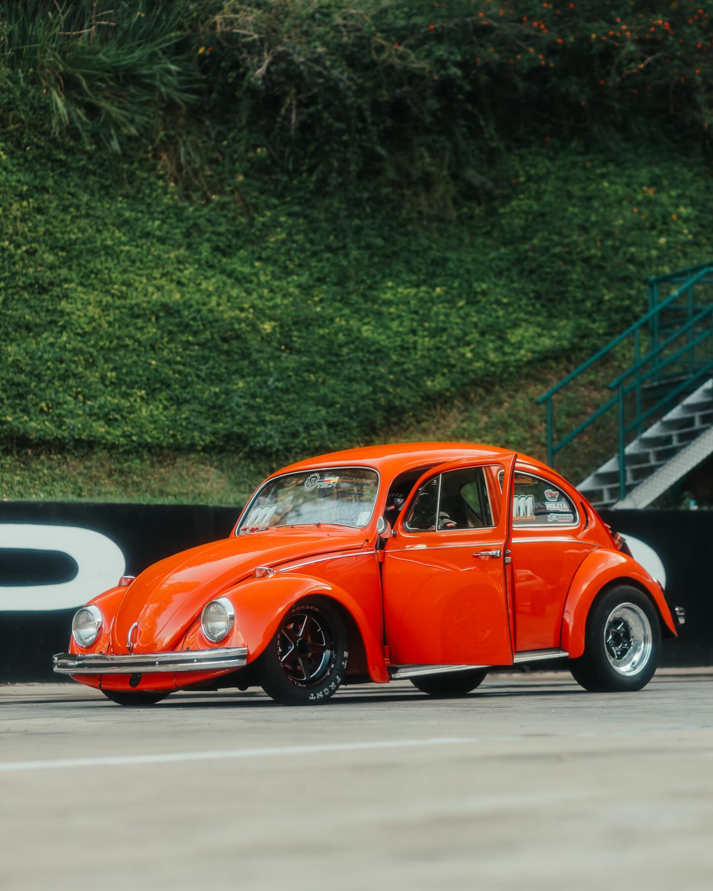
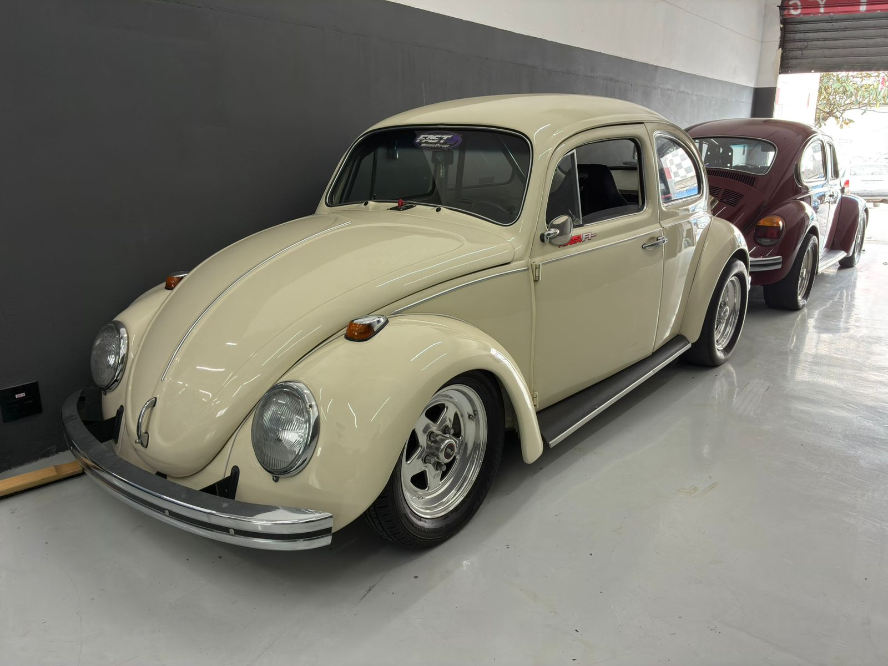

← Projeto CrushKiller
Fusca de lata 1600cc mais rapido do mundo. Ele é pilotado por leandro passini.
Preparado por Fabio Peciulis, pela equipe Fast4 RacePrep, o carro sofreu um acidente na ultima prova
e agora estamos fazendo o CrushKiller 2.0.
- 800cv de potencia
- 200m em 5.6s

Projeto Thunder Bug →
Fusca de lata 2200cc mais rapido do mundo piotado por Caio Fabri,
preparado pela equipe Fast4 RacePrep
- 1200cv de potencia
- 200m em 5.3s

← Projeto PM28
Fusca todo tubular Turbo, vai estrear na primeira etapa da Spid Cup. 2500cc.....
- ???cv de potencia
- 200m em ???

Projeto Fusca Furieli 1600cc Turbo→
Fusca de lata 1600cc, pilotado por Fabio Furieli.
- 500cv de potencia
- 200m em 6.3s